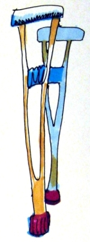
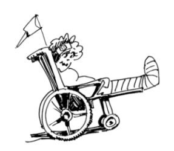

This page has usage examples for the following words:

amputation 切断 せつだん
artificial leg 義足 ぎそく
artificial arm 義手 ぎしゅ
acquired 後天性の こうてんせいの
be paralyzed 麻痺する まひする
cane つえ
congenital, born with 先天性の せんてんせいの
disabled, physically challenged 身体障害者 しんたいしょうがいしゃ
paralyzed from the waist down 下半身不随 かはんしんふずい
rehabilitation リハビリ
wheelchair 車椅子 くるまいす
May I ask what happened to your leg?
失礼ですが、足をどうされましたか。
しつれいですが、あしをどうされましたか。
I had to have my leg amputated because of complications related to diabetes mellitus.
糖尿病の合併症で、片足を切断したのです。
とうにょうびょうのがっぺいしょうで、かたあしをせつだんしたのです。
I was born with bad legs.
生まれつき足が悪くて・・・
うまれつき あしがわるくて・・・
I was paralyzed from the waist down after I was involved in a traffic accident 10 years ago.
１０年前、交通事故で下半身不随になったのです。
１０ねんまえ、こうつうじこで かはんしんふずいになったのです。
Is there any restroom facility for the disabled?
車椅子専用のお手洗いはありますか。
くるまいすせんようの おてあらいはありますか。

A conversation between a patient and a doctor about disabled, physically challenged
Patient:
When I saw a friend whom I haven’t seen for a while, I was surprised to find that she had one of her legs amputated below the knee because of diabetes mellitus. I would like to know if there are appropriate or inappropriate expressions and words concerning physical disabilities when you meet people with disabilities.
Doctor:
久しぶりに会った知人が、糖尿病のせいで片足をひざ下から切断していて驚きました。身体に障害を持った人とそのことが話題になった際に、失礼にならない表現、ふさわしい言葉、ふさわしくない言葉がありますね。
In Japanese, words such as fugu (disabled), bikko (lameness) and mekura (blind) are banned from official words. In English, the word “disabled” has been changed to “physically challenged”, giving more positive feelings. However, words like “blind” and “deaf” are still used officially as well as privately. When you find someone you know become disabled, it is appropriate to express frankly your surprise, sympathy and encouragement.
そうですね。例えば、日本語で不具、びっこ、めくら、などは、公用語としては避けるべき言葉です。英語でも「身体障害のある」ことの表現は、 disabled と一般に使われるほかに、最近では、physically challenged （直訳：身体的に挑戦する）と非常に前向きの感じの表現となっています。唯、blind（盲目）や、deaf（耳が聞こえない）は、公的にも私的にも使用されています。お話にありましたように、知った方の場合は、素直に驚きを表し、心をこめてお見舞い、激励の言葉を述べてよいと思います。
My two cents 一言おせっかい
“Please let me know if I can do anything.”
We hope we can say the expression such as this at any moment.
"Please let me know if I can do anything."
「何か私にできることがあればおっしゃってください。」
こんな言葉をいつも用意しておきたいものですね。
[shi06]
| © 1995-2013 NACOS International Institute. All Rights Reserved. |